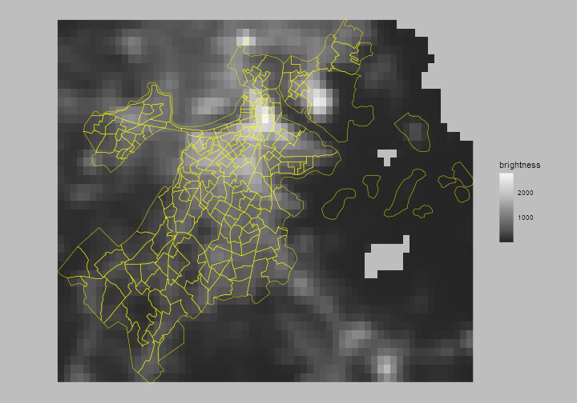

<main class="resume-main" id="main">
    <div class="resume-content">
        <section class="resume-section">
            
            <h1 class="hero-title">Public Housing and Nighttime Lights</h1>
            <p>This project is part of a series of work looking at whether nightlight satellite imagery (NASA's Blue Marble) can be used to detect street lighting. Furthermore, it explored whether public housing areas were excessively exposed to nighttime lighting. All of the project is written in R.</p>
            <br>
            <a href="https://github.com/agroimpacts/nightlightF22"> Check out the full work on GitHub
                <i class="fa fa-github" style="font-size:36px"></i>
            </a>
        </section>
    </div>
</main>